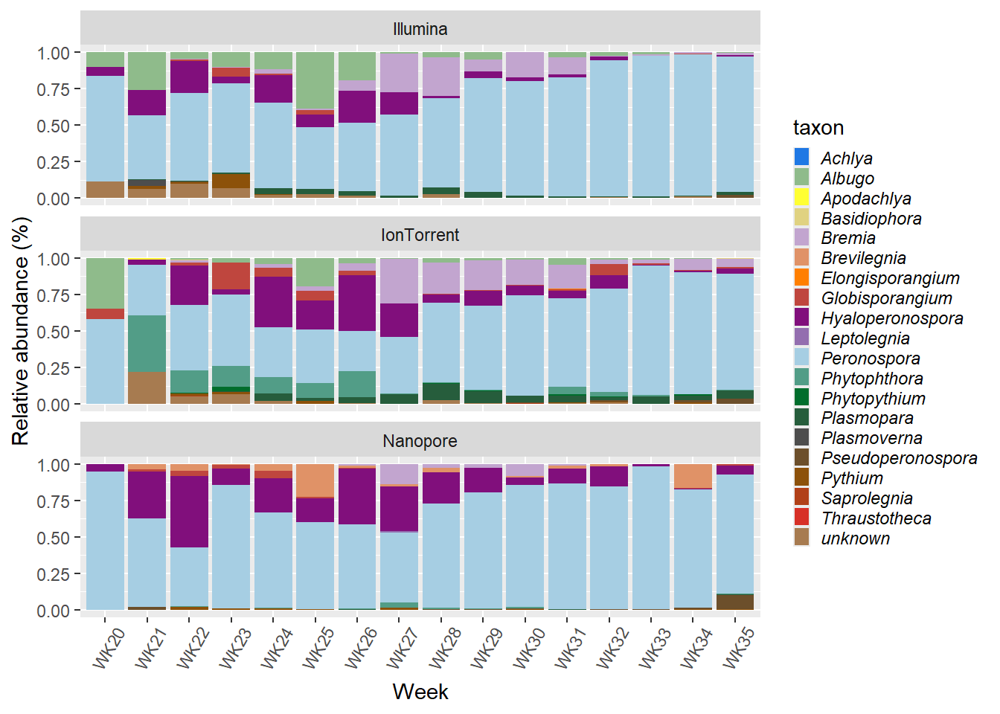
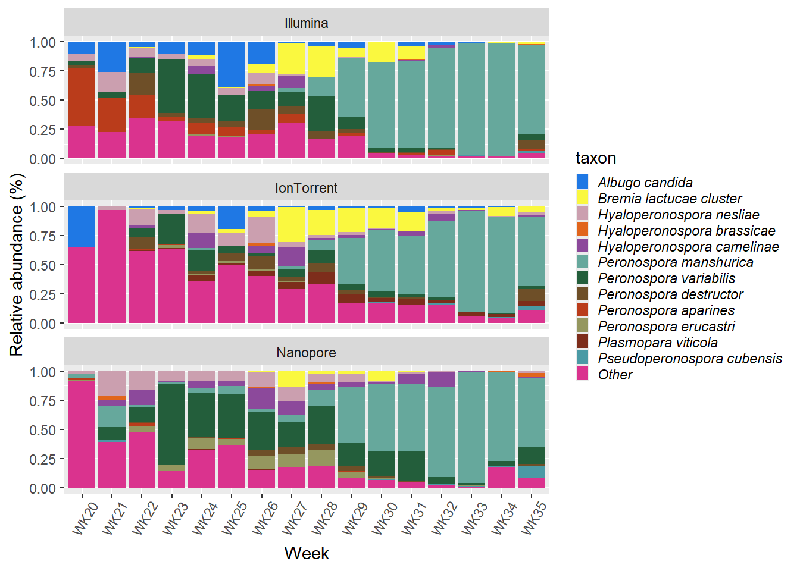

One of the first things that comes to mind when presenting metabarcoding data is the ever-popular stacked bar chart. Again, there are many packages that can be used to draw stacked bar charts (see for example MicrobiotaProcess), but let’s do it manually this time instead.
Let’s load our latest Phyloseq object and librariries.
library("phyloseq")
library("tidyverse")
WorkingPS<-readRDS("Processed_data/combinedPS_clean_pruned_filtered.rds");WorkingPS## phyloseq-class experiment-level object
## otu_table() OTU Table: [ 2969 taxa and 277 samples ]
## sample_data() Sample Data: [ 277 samples by 9 sample variables ]
## tax_table() Taxonomy Table: [ 2969 taxa by 7 taxonomic ranks ]
## phy_tree() Phylogenetic Tree: [ 2969 tips and 2968 internal nodes ]# Because The Nanopore data set also contains fungi, lets keep only the Oomycota Phylum.
WorkingPS<-subset_taxa(WorkingPS, Phylum=="Oomycota");WorkingPS## phyloseq-class experiment-level object
## otu_table() OTU Table: [ 1491 taxa and 277 samples ]
## sample_data() Sample Data: [ 277 samples by 9 sample variables ]
## tax_table() Taxonomy Table: [ 1491 taxa by 7 taxonomic ranks ]
## phy_tree() Phylogenetic Tree: [ 1491 tips and 1490 internal nodes ]Here is a function borrowed from the MicrobiotaProcess package that will be helpful later when plotting our bar chart.
get_cols <- function (n){
col <- c("#8dd3c7", "#ffffb3", "#bebada", "#fb8072", "#80b1d3",
"#fdb462", "#b3de69", "#fccde5", "#d9d9d9", "#bc80bd",
"#ccebc5", "#ffed6f")
col2 <- c("#1f78e4", "#ffff33", "#c2a5cf", "#ff7f00", "#810f7c",
"#a6cee3", "#006d2c", "#4d4d4d", "#8c510a", "#d73027",
"#78c679", "#7f0000", "#41b6c4", "#e7298a", "#54278f")
col3 <- c("#a6cee3", "#1f78b4", "#b2df8a", "#33a02c", "#fb9a99",
"#e31a1c", "#fdbf6f", "#ff7f00", "#cab2d6", "#6a3d9a",
"#ffff99", "#b15928")
colorRampPalette(col2)(n)
}The phyloseq psmelt function converts our phyloseq object into a data frame.
## OTU Sample Abundance
## 61807 2949b355cd00039476d9a808f2e76b8e IonT_QC0621WK33 390300
## 61805 2949b355cd00039476d9a808f2e76b8e IonT_QC0421WK33 389752
## 246750 9d34744d5f40b8a99cc028bb4908e00b IonT_QC0421WK32 332168
## 246625 9d34744d5f40b8a99cc028bb4908e00b IonT_QC0621WK34 323922
## 246773 9d34744d5f40b8a99cc028bb4908e00b IonT_QC0521WK33 302992
## 61789 2949b355cd00039476d9a808f2e76b8e IonT_QC0621WK32 258720
## InputFileName Samplename seq_tech SiteID Region
## 61807 B82_9_L001_R1_001.fastq.gz QC06_21_WK33 IonTorrent QC06 Sherrington
## 61805 B80_9_L001_R1_001.fastq.gz QC04_21_WK33 IonTorrent QC04 Napierville
## 246750 B73_9_L001_R1_001.fastq.gz QC04_21_WK32 IonTorrent QC04 Napierville
## 246625 B89_9_L001_R1_001.fastq.gz QC06_21_WK34 IonTorrent QC06 Sherrington
## 246773 B81_9_L001_R1_001.fastq.gz QC05_21_WK33 IonTorrent QC05 St-Edouard
## 61789 B75_9_L001_R1_001.fastq.gz QC06_21_WK32 IonTorrent QC06 Sherrington
## Year Week X_coord Y_coord Kingdom Phylum Class
## 61807 2021 WK33 45.13174 -73.4719 Eukaryota Oomycota Stramenopiles
## 61805 2021 WK33 45.18664 -73.3426 Eukaryota Oomycota Stramenopiles
## 246750 2021 WK32 45.18664 -73.3426 Eukaryota Oomycota Stramenopiles
## 246625 2021 WK34 45.13174 -73.4719 Eukaryota Oomycota Stramenopiles
## 246773 2021 WK33 45.19820 -73.5421 Eukaryota Oomycota Stramenopiles
## 61789 2021 WK32 45.13174 -73.4719 Eukaryota Oomycota Stramenopiles
## Order Family Genus Species
## 61807 Peronosporales Peronosporaceae Peronospora Peronospora manshurica
## 61805 Peronosporales Peronosporaceae Peronospora Peronospora manshurica
## 246750 Peronosporales Peronosporaceae Peronospora Peronospora manshurica
## 246625 Peronosporales Peronosporaceae Peronospora Peronospora manshurica
## 246773 Peronosporales Peronosporaceae Peronospora Peronospora manshurica
## 61789 Peronosporales Peronosporaceae Peronospora Peronospora manshuricagenus_abundance <- WorkingPS_melt %>%
group_by(seq_tech, Week) %>%
mutate(rel_abund = Abundance / sum(Abundance)) %>%
ungroup() %>%
select(-Abundance) %>%
pivot_longer(c("Kingdom", "Phylum", "Class", "Order", "Family", "Genus", "Species"),
names_to="level",
values_to="taxon");head(genus_abundance)## # A tibble: 6 × 14
## OTU Sample InputFileName Samplename seq_tech SiteID Region Year Week
## <chr> <chr> <chr> <chr> <chr> <chr> <chr> <int> <chr>
## 1 2949b355cd… IonT_… B82_9_L001_R… QC06_21_W… IonTorr… QC06 Sherr… 2021 WK33
## 2 2949b355cd… IonT_… B82_9_L001_R… QC06_21_W… IonTorr… QC06 Sherr… 2021 WK33
## 3 2949b355cd… IonT_… B82_9_L001_R… QC06_21_W… IonTorr… QC06 Sherr… 2021 WK33
## 4 2949b355cd… IonT_… B82_9_L001_R… QC06_21_W… IonTorr… QC06 Sherr… 2021 WK33
## 5 2949b355cd… IonT_… B82_9_L001_R… QC06_21_W… IonTorr… QC06 Sherr… 2021 WK33
## 6 2949b355cd… IonT_… B82_9_L001_R… QC06_21_W… IonTorr… QC06 Sherr… 2021 WK33
## # ℹ 5 more variables: X_coord <dbl>, Y_coord <dbl>, rel_abund <dbl>,
## # level <chr>, taxon <chr>genus_abundance %>%
filter(level=="Genus") %>%
group_by(seq_tech, Week, taxon) %>%
summarize(rel_abund = sum(rel_abund), .groups="drop") %>%
group_by(seq_tech, Week, taxon) %>%
summarize(mean_rel_abund=mean(rel_abund), .groups="drop") %>%
ggplot(aes(x=Week, y=mean_rel_abund, fill=taxon))+
geom_col()+
facet_wrap(vars(seq_tech), nrow = 3)+
labs(x="Week",
y="Relative abundance (%)")+
theme(legend.text = element_text(face="italic"))+
scale_fill_manual(values=get_cols(29))+ # This line calls the "get_cols">" function above
guides(fill= guide_legend(keywidth = 0.6,
keyheight = 0.7,
ncol=1))+
theme(axis.text.x = element_text(angle = 60,
vjust = 0.5,
hjust=0.4))
predefined_species = c("Peronospora manshurica",
"Peronospora variabilis",
"Bremia elliptica",
"Hyaloperonospora nesliae",
"Peronospora destructor",
"Hyaloperonospora camelinae",
"Peronospora aparines",
"Peronospora erucastri",
"Albugo candida",
"Plasmopara viticola",
"Bremia lactucae",
"Hyaloperonospora brassicae",
"Pseudoperonospora cubensis"
);predefined_species## [1] "Peronospora manshurica" "Peronospora variabilis"
## [3] "Bremia elliptica" "Hyaloperonospora nesliae"
## [5] "Peronospora destructor" "Hyaloperonospora camelinae"
## [7] "Peronospora aparines" "Peronospora erucastri"
## [9] "Albugo candida" "Plasmopara viticola"
## [11] "Bremia lactucae" "Hyaloperonospora brassicae"
## [13] "Pseudoperonospora cubensis"WorkingPS_melt2 <- WorkingPS_melt %>%
mutate(Species = case_when(
Species %in%
predefined_species ~ Species, # Keep valid species as is
TRUE ~ "Other" # Replace other species with "other"
))
head(WorkingPS_melt2)## OTU Sample Abundance
## 61807 2949b355cd00039476d9a808f2e76b8e IonT_QC0621WK33 390300
## 61805 2949b355cd00039476d9a808f2e76b8e IonT_QC0421WK33 389752
## 246750 9d34744d5f40b8a99cc028bb4908e00b IonT_QC0421WK32 332168
## 246625 9d34744d5f40b8a99cc028bb4908e00b IonT_QC0621WK34 323922
## 246773 9d34744d5f40b8a99cc028bb4908e00b IonT_QC0521WK33 302992
## 61789 2949b355cd00039476d9a808f2e76b8e IonT_QC0621WK32 258720
## InputFileName Samplename seq_tech SiteID Region
## 61807 B82_9_L001_R1_001.fastq.gz QC06_21_WK33 IonTorrent QC06 Sherrington
## 61805 B80_9_L001_R1_001.fastq.gz QC04_21_WK33 IonTorrent QC04 Napierville
## 246750 B73_9_L001_R1_001.fastq.gz QC04_21_WK32 IonTorrent QC04 Napierville
## 246625 B89_9_L001_R1_001.fastq.gz QC06_21_WK34 IonTorrent QC06 Sherrington
## 246773 B81_9_L001_R1_001.fastq.gz QC05_21_WK33 IonTorrent QC05 St-Edouard
## 61789 B75_9_L001_R1_001.fastq.gz QC06_21_WK32 IonTorrent QC06 Sherrington
## Year Week X_coord Y_coord Kingdom Phylum Class
## 61807 2021 WK33 45.13174 -73.4719 Eukaryota Oomycota Stramenopiles
## 61805 2021 WK33 45.18664 -73.3426 Eukaryota Oomycota Stramenopiles
## 246750 2021 WK32 45.18664 -73.3426 Eukaryota Oomycota Stramenopiles
## 246625 2021 WK34 45.13174 -73.4719 Eukaryota Oomycota Stramenopiles
## 246773 2021 WK33 45.19820 -73.5421 Eukaryota Oomycota Stramenopiles
## 61789 2021 WK32 45.13174 -73.4719 Eukaryota Oomycota Stramenopiles
## Order Family Genus Species
## 61807 Peronosporales Peronosporaceae Peronospora Peronospora manshurica
## 61805 Peronosporales Peronosporaceae Peronospora Peronospora manshurica
## 246750 Peronosporales Peronosporaceae Peronospora Peronospora manshurica
## 246625 Peronosporales Peronosporaceae Peronospora Peronospora manshurica
## 246773 Peronosporales Peronosporaceae Peronospora Peronospora manshurica
## 61789 Peronosporales Peronosporaceae Peronospora Peronospora manshuricagenus_abundance2 <- WorkingPS_melt2 %>%
group_by(seq_tech, Week) %>%
mutate(rel_abund = Abundance / sum(Abundance)) %>%
ungroup() %>%
select(-Abundance) %>%
pivot_longer(c("Kingdom", "Phylum", "Class", "Order", "Family", "Genus", "Species"),
names_to="level",
values_to="taxon")%>%
mutate(taxon = factor(taxon,
levels=c("Peronospora manshurica",
"Peronospora variabilis",
"Peronospora destructor",
"Peronospora aparines",
"Peronospora erucastri",
"Bremia elliptica",
"Bremia lactucae",
"Albugo candida",
"Hyaloperonospora nesliae",
"Hyaloperonospora brassicae",
"Hyaloperonospora camelinae",
"Plasmopara viticola",
"Pseudoperonospora cubensis",
"Other")))genus_abundance2 %>%
filter(level=="Species") %>%
group_by(seq_tech, Week, taxon) %>%
summarize(rel_abund = sum(rel_abund), .groups="drop") %>%
group_by(seq_tech, Week, taxon) %>%
summarize(mean_rel_abund=mean(rel_abund), .groups="drop") %>%
ggplot(aes(x=Week, y=mean_rel_abund, fill=taxon))+
geom_col()+
facet_wrap(vars(seq_tech), nrow = 3)+
labs(x="Week",
y="Relative abundance (%)")+
theme(legend.text = element_text(face="italic"))+
scale_fill_manual(values=get_cols(29))+ # This line calls the "get_cols">" function above
guides(fill= guide_legend(keywidth = 0.6,
keyheight = 0.7,
ncol=1))+
theme(axis.text.x = element_text(angle = 60,
vjust = 0.5,
hjust=0.4))